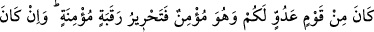

ADAM ÖLDÜRME
92- Yanlışlıkla olması dışında bir mü’minin bir mü’mini öldürmeye hakkı olamaz.
Yanlışlıkla bir mü’mini öldüren kimsenin, mü’min bir köle âzâd etmesi ve ölenin
âilesine teslim edilecek bir diyet vermesi gereklidir. Ölenin âilesi o diyeti bağışlarsa
başka. (Bu takdirde diyet vermez). Eğer öldürülen mü’min olduğu halde size
düşman olan bir toplumdan ise mü’min bir köle âzâd etmek lâzımdır. Eğer
kendileriyle aranızda andlaşma bulunan bir toplumdan ise ailesine teslim edilecek
bir diyet ve bir mü’min köleyi âzâd etmek gerekir. Bunları bulamayan kimsenin,
Allah tarafından tevbesinin kabulü için iki ay peşpeşe oruç tutması lâzımdır. Allah
her şeyi bilendir, hikmet sâhibidir.
93- Kim bir mü’mini kasden öldürürse cezâsı, içinde ebediyyen kalacağı
cehennemdir. Allah ona gazap etmiş, onu lânetlemiş ve onun için büyük bir azap
hazırlamıştır.
“Yanlışlıkla olması dışında bir mü’minin bir mü’mini öldürmeye hakkı olamaz.”
Çünkü îmân bunu engeller. Ancak bir hata neticesi olabilir. Çünkü tamâmiyle kaçınmak
tâkatının dışında olduğu için Mü’min çoğu kez hatâya düşebilecek yaratılıştadır. Hatâ;
öldürme kasdı olmaksızın veya ekseriyetle bir şahsın ölümüne yol açmayan bir fiil ile
yâhut da kendisiyle haram kasdedilmeyen bir fiil ile meydana gelen öldürmedir. Mesela,
savaş esnasında düşmana hücûm ederken onların arasında bulunan ve müslüman olduğu
bilinmeyen bir kimsenin öldürülmesi gibi.
Rivâyet edilir ki Ebû Cehil’in anne bir kardeşi Ayyâş b. Ebî Rebîa müslüman olmuş
ve âilesinden korktuğu için Medîne’ye hicret etmişti. Bu hicret Rasûlullah (s.a.v.)’in
hicretinden önce idi. Annesi, Ayyâş dönmedikçe yiyip içmeyeceğine ve eve girip
barınmayacağına yemîn etti. Ebû Cehil yanında Hâris b. Zeyd b. Ebî Üneyse olduğu